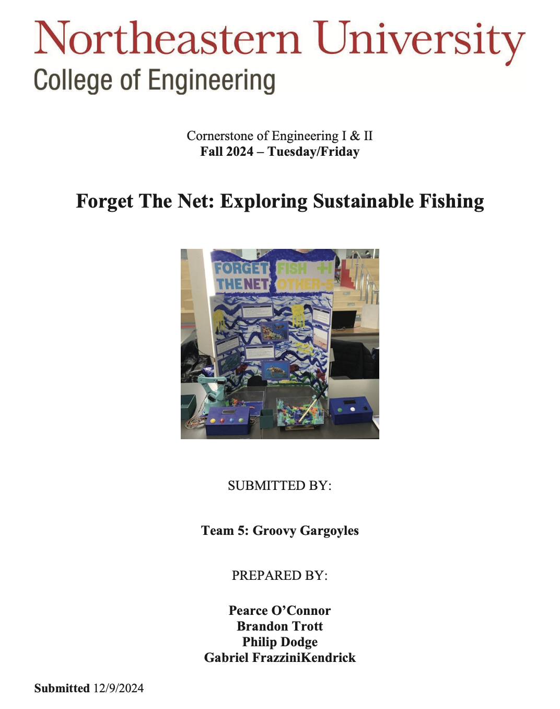
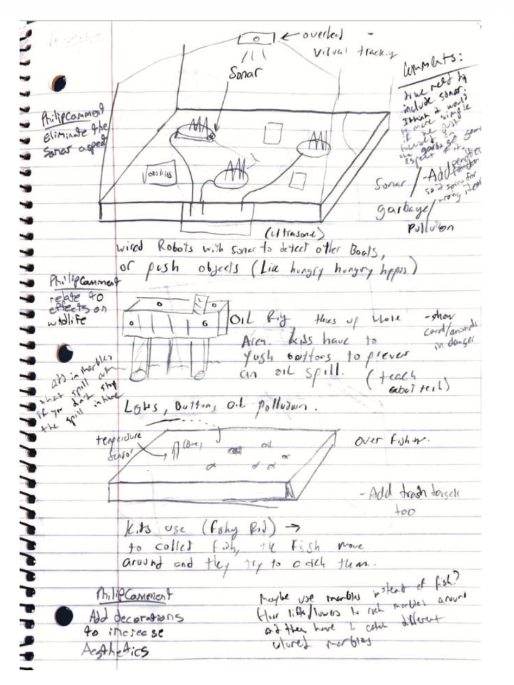
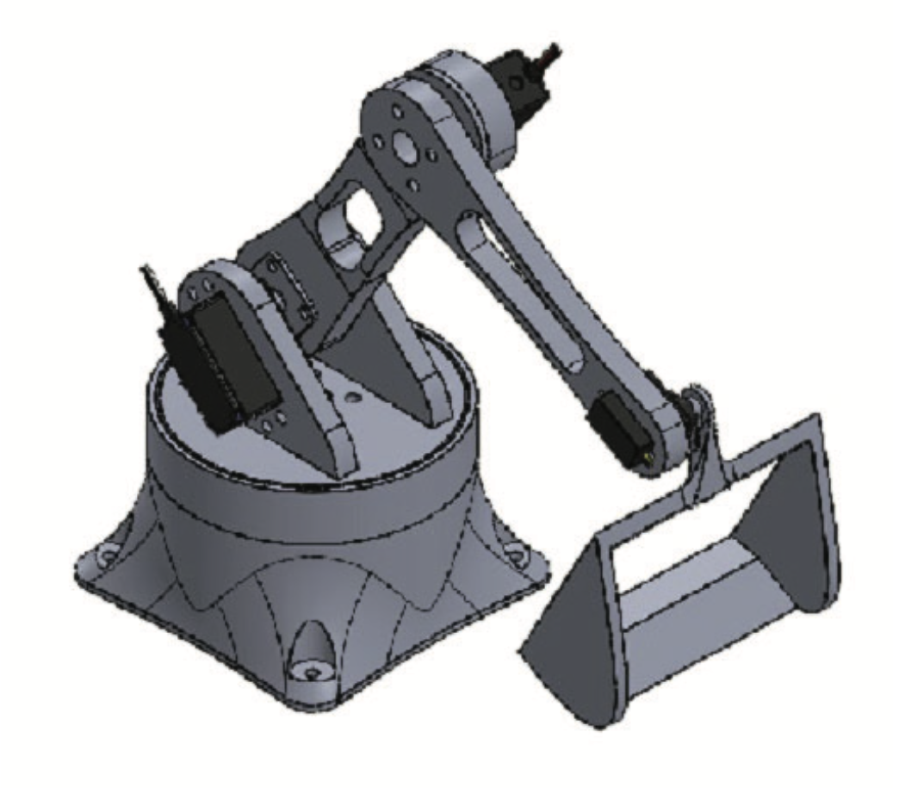

SolidWorks · Mechatronics · Northeastern Cornerstone design course
For my first-year engineering design course, my team was challenged to build an interactive museum exhibit that would teach visitors — mostly kids — about sustainable fishing. The goal was to take a complicated environmental topic and make it approachable: scientifically honest, but fun enough that a ten-year-old would actually stop and play with it.
We designed and built a robotic arm that simulated fishing scenarios to demonstrate sustainable practices. I worked on integrating the servos that drove the arm's movement and coordinated with teammates on the electronics and programming.

The honest version: the hardware fought us the whole way. The servos couldn't handle extended operation and several burned out during testing. We had a structural problem where the base servo broke, so the arm wobbled and sometimes tipped over. The exhibit needed constant maintenance to stay running. We had to balance ambitious design goals against our budget and timeline, and the compromises we made on component quality came back to bite us.

But here's the thing: where it mattered, it worked. During public exhibitions we collected feedback from visitors — average fun rating 4.64 out of 5, average complexity rating 1.27 out of 5 (1 meaning simple and easy to understand). Kids got it. People forgave the occasional malfunction because the core idea landed.

Two lessons stuck with me. First: user experience can matter more than technical perfection. Second, and the one I think about more: design for reliability from the start instead of patching it later. We learned that one the expensive way, one burned-out servo at a time.